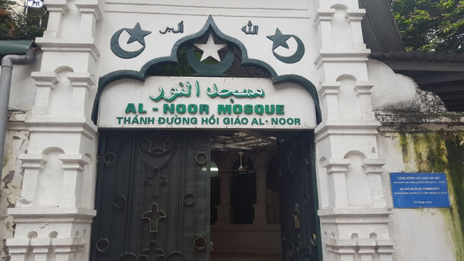

Hanoi, Ha Long & Sapa.
Explore Hanoi, Ha Long & Sapa with your own travel party. Shape the route, dates and pace with Senyum.

A journey to make your own.
Start with this route. Tell us your dates, who’s travelling and what you’d love to experience; we’ll help shape the details around you.
- Hanoi
- Ha Long Bay
- Sapa
- Muslim-friendly travel
Your time in Hanoi, Ha Long & Sapa.
DAY01Hanoi Arrival
Our Travel Agent will welcome guests at Noi Bai International Airport (New Terminal Gate 02, Meeting point at Column 10). We will then arrange a comfortable transfer to the city for your hotel check-in. Please note that standard hotel check-in time begins at 14:00 hours. Early check-in to your hotel room is subject to availability and the hotel’s discretion.
Optional Walking Tour:
Our guide will welcome you at your hotel then start the walking tour to discover the Old and French Quarter. Amidst the bustling streets that have replaced villages, the old streets retain their charm and offer exciting experiences. Hanoi’s Old Quarter, despite war damages, preserves its architectural allure with distinct “tubular houses.” Don’t miss the only mosque in Hanoi, Masjid Al Noor. Continue to Hoan Kiem Lake, visit Ngoc Son temple, and venture into the French Quarter. The French colonial era may have ended, but its artistic influence and Deco style still grace this quarter, creating an elegant and captivating Hanoi.
Overnight in Hanoi. Lunch & Dinner at Local restaurant
Meals: Lunch · Dinner
DAY02Hanoi – Halong Bay – Halong Bay Overnight on Cruise
Enjoy breakfast at your hotel.
7:30 You will be picked up from your hotel and transferred to the pier to embark on a superior cruise ship, where you will be greeted with welcome drinks. Once you have completed the check-in process, savor a delectable seafood lunch while cruising through the enchanting bay, where thousands of limestone islands emerge from the water like dragon teeth. After lunch, embark on a short trek to a nearby summit on Titop Island, offering a panoramic view of the bay. You can also choose to swim on a serene beach or relax and sunbathe on the deck. In the afternoon, return to the ship for a stunning sunset view and the opportunity to participate in a cooking class at the restaurant. Later, enjoy the meal you have prepared. After dinner, you are free to engage in various activities such as squid fishing and karaoke.
Overnight on the cruise. Lunch & Dinner on cruise
Meals: Breakfast · Lunch · Dinner
DAY03Halong Bay – Sung Sot Cave – Hanoi
06:30 Morning light exercises (Tai-Chi)
Start your day with a refreshing wake-up call to witness the breathtaking sunrise over the bay. Take a moment to relax and savor a cup of tea or coffee before setting off to explore the magnificent Sung Sot Cave, known for its stunning stalactites hanging from the high ceilings. Indulge in a delicious Vietnamese cuisine lunch on board as you cruise back to the harbor. From there, we will arrange a comfortable transfer back to your hotel in Hanoi, ensuring a convenient end to your memorable experience.
Overnight in Hanoi. Breakfast, Lunch on cruise & Dinner at Local restaurant .
Meals: Breakfast · Lunch · Dinner
DAY04Hanoi – Sapa - Cat Cat Village
7.00: Prepare for an exciting journey as we pick you up from your hotel and begin our trip to Sapa. We will follow the highway, making a comfortable stop along the way in Lao Cai city.11.00: Second comfort break at Lao Cai city before approaching Sapa
12.30: Upon arrival in Sapa Town, you will be welcomed by the locals dressed in colorful traditional costumes representing the H’mong, Dzao, and Tay ethnic groups. Afterward, you will proceed to check in at your hotel. Indulge in a delightful lunch featuring local Vietnamese dishes to savor the flavors of the region.
14.30: A short drive to reach the entrance of Cat Cat village, nestled in a deep valley at the base of Fansipan Peak and inhabited by the Black H’mong ethnic community. Accompanied by our knowledgeable local guide, you will have the opportunity to witness the daily activities and traditions of the locals. Descend into the valley to visit the enchanting waterfall, which holds historical significance as the site of a former French-built Hydraulic Power Station. Capture memorable photos as you cross the bridge and admire the cascading water. Afterward, you will embark on an uphill walk to catch a bus that will transport you back to Sapa. Enjoy some free time in the evening to explore the town and indulge in a delicious dinner of your choice.
Overnight in Sapa. Lunch & Dinner at local restaurant.
Meals: Breakfast · Lunch · Dinner
DAY05Sapa- Lao Chai- Ta Van Village-Hanoi
Enjoy breakfast at the hotel before a short drive to Y Linh Ho. Trek through rice terraces and along Muong Hoa Stream to reach Lao Chai, a Black Hmong village with breathtaking views of Hoang Lien Son Mountain. Continue to Ta Van, a village of the Dzay ethnic group. A bus will pick you up at Ta Van Bridge and take you back to Sapa. Relish a delicious lunch at a local restaurant. Afterward, you’ll have free time to relax, explore, and shop at your leisure.
15.00: Get on the bus to go back to Hanoi with two comfort breaks.
20.00: Arrival at Hanoi.
Overnight in Hanoi. Lunch & Dinner at local restaurant.
Meals: Breakfast · Lunch · Dinner
DAY06Hanoi- Hoa Lu - Tam Coc
Start your day with breakfast before heading to Ninh Binh Province. Explore Hoa Lu Ancient Capital, the former seat of power for Dai Co Viet from 968 to 1009. Visit the temples dedicated to King Dinh Tien Hoang and King Le Dai Hanh, learning about Vietnam’s feudal dynasties and significant historical periods. Enjoy a delicious lunch at a local restaurant before embarking on a scenic boat ride in Hoang Long River. Marvel at the Tam Coc caves and the stunning paddy fields if you visit in April or September. After the boat trip, we return to Hanoi, concluding our memorable journey.
Overnight in Hanoi. Lunch & Dinner at local restaurant.
Meals: Breakfast · Lunch · Dinner
DAY07Hanoi Departure
After enjoying breakfast at your hotel, you have the freedom to explore Hanoi at your leisure until it’s time to transfer to Noi Bai Airport for your onward flight. This marks the completion of your 7-day Hanoi-Halong Bay-Sapa Tour with Senyum Rihlat.
Meals: Breakfast
Final routes, accommodation, meals and travel arrangements are confirmed with your consultant before booking.
Let’s get the details right.
Share your preferred dates, number of travellers and any special requests.
Confirm hotels, flights, transfers, meal arrangements and the final price with our team.